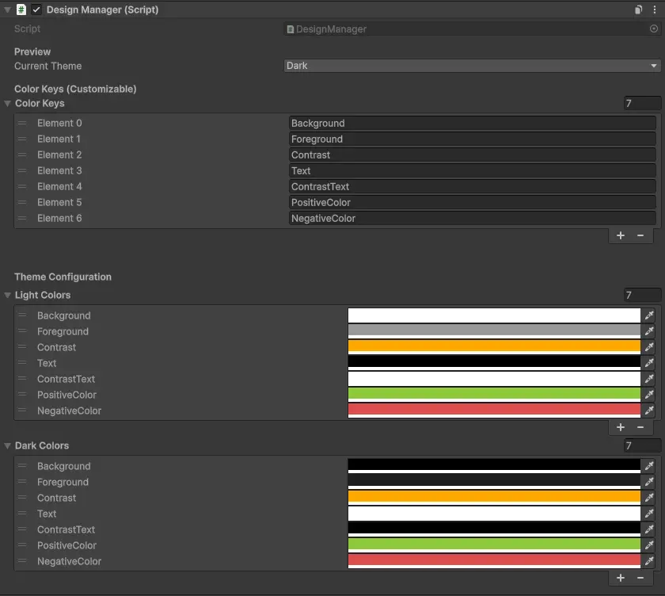
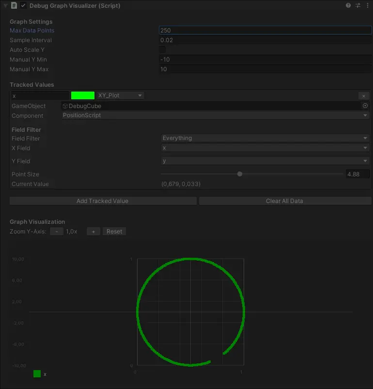

UNPUBLISHED UNITY ASSETS
EDITOR TOOLS & UTILITIES IN DEVELOPMENT
A collection of Unity Editor tools and utilities that are currently in development or awaiting publication.
These assets are designed to streamline workflows, enhance the Unity Editor experience, and solve common
development challenges. Click on any asset image to learn more or get early access.
UI Design Manager
A centralized theme and color management system for Unity UI. Define your color palette once
and apply it across your entire project with automatic light/dark mode switching. Works in
Edit Mode for instant visual feedback while designing your UI.
- Centralized color palette with customizable color keys
- Automatic Light/Dark theme switching
- Works in Edit Mode - see changes instantly
- DesignController component for UI elements (Image, Text, Button, Toggle)
- Custom property drawers for easy color selection
- Singleton pattern for global access


Debug Tools
Real-time debug visualization toolkit for Unity. Graph any field from any MonoBehaviour
directly in the Inspector. Perfect for debugging physics, animations, AI behavior, and
any numeric values that change over time.
- Real-time graphing of any MonoBehaviour field
- Multiple graph types: Line, Filled Area, XY Plot
- Track multiple values simultaneously with color coding
- Auto-scaling or manual Y-axis range
- Field visibility filter (Public, Serialized, Private)
- Network visualizer for multiplayer debugging
Anim Studio
A frame-based animation recording and playback system for Unity. Record transform data
at runtime and play it back with precise frame control. Ideal for cinematics,
motion capture cleanup, and creating repeatable animation sequences.
- Frame-based recording and playback system
- StudioDirector for centralized animation control
- TransformRecorder for position, rotation, and scale
- World or Local space recording options
- Automatic physics handling during playback
- IStudioAnimator interface for custom animators
[ ANIM STUDIO ]
INTERESTED IN THESE ASSETS?
These Unity assets are currently in development. Check back soon for updates,
or contact me for early access and feedback opportunities.